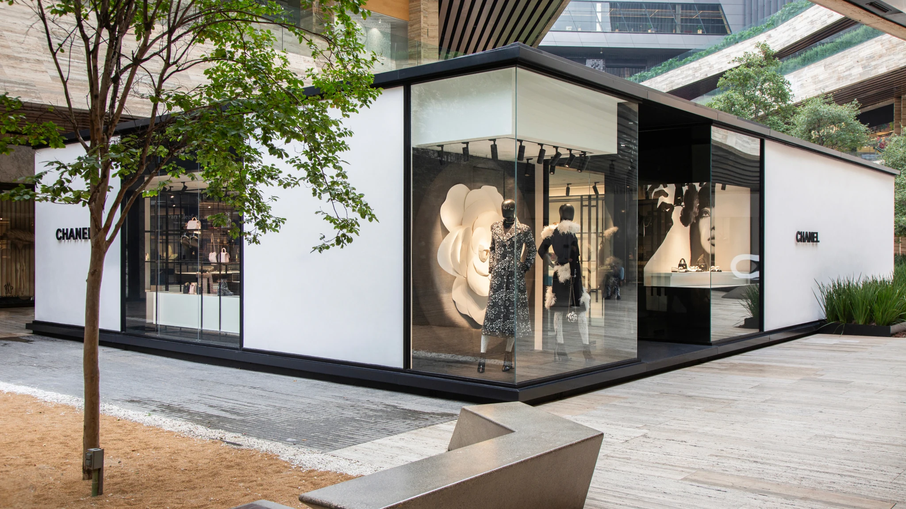
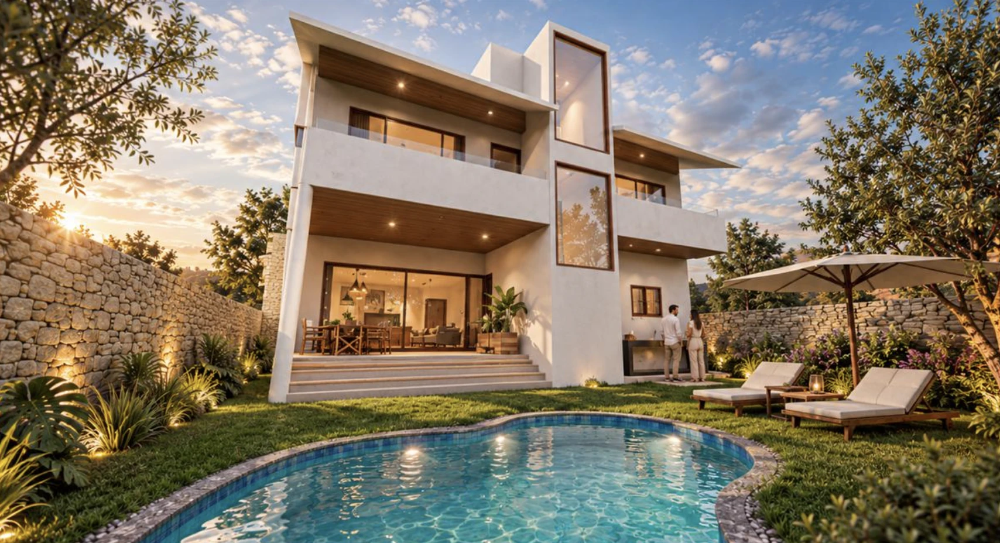
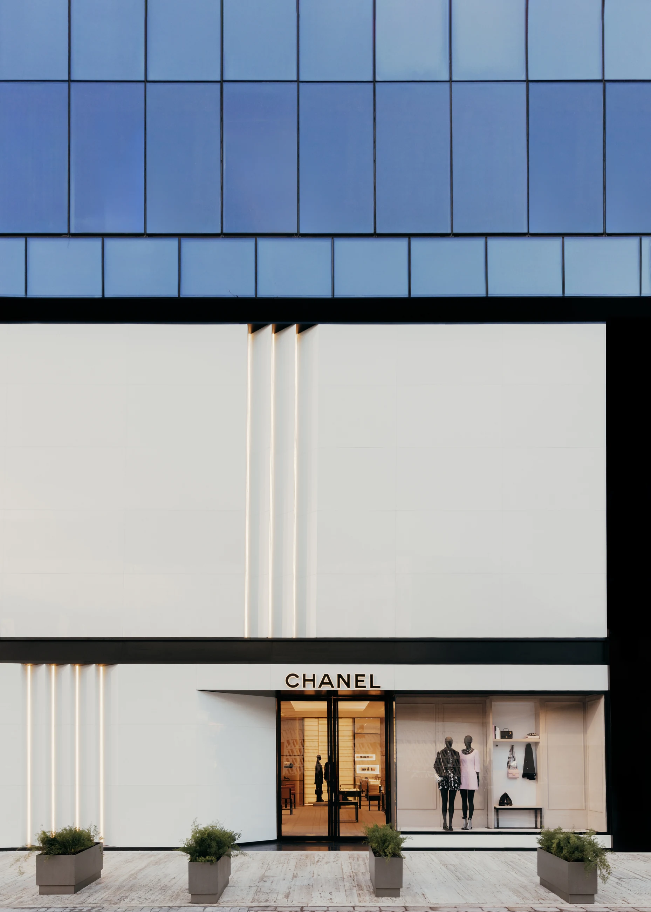
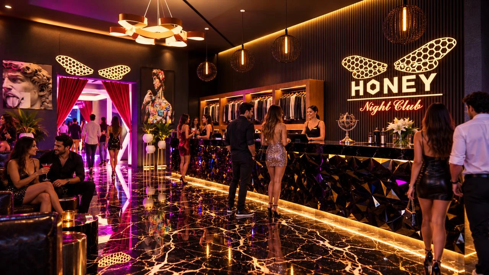
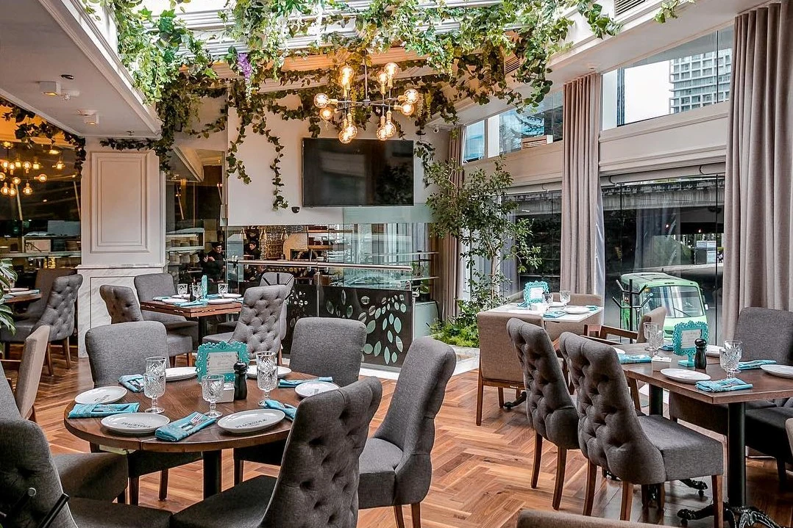
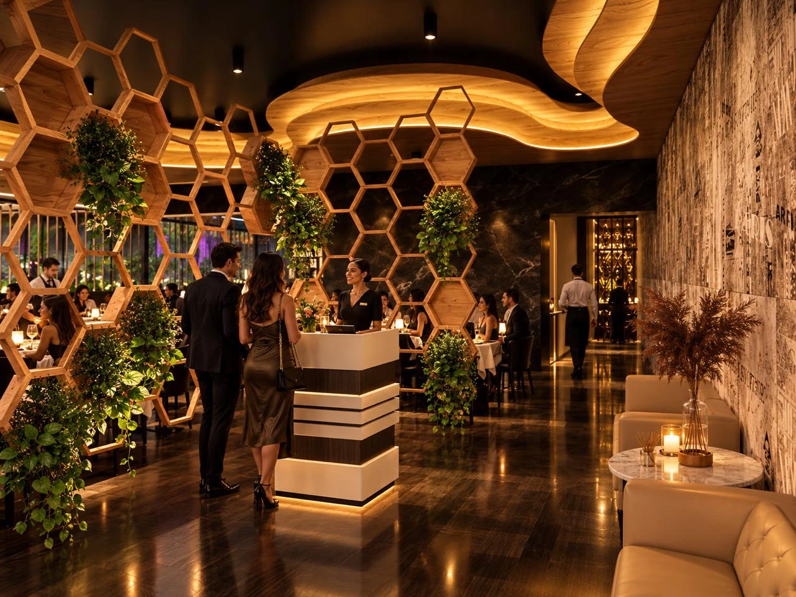
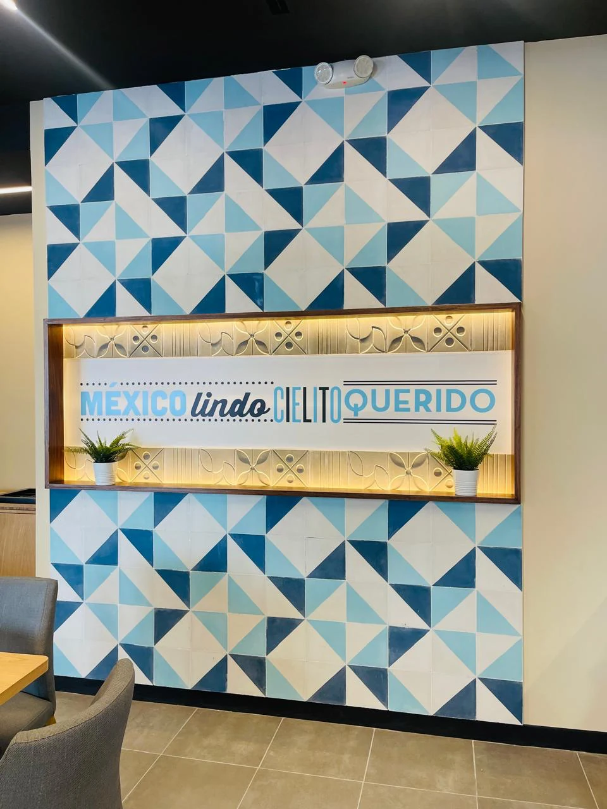
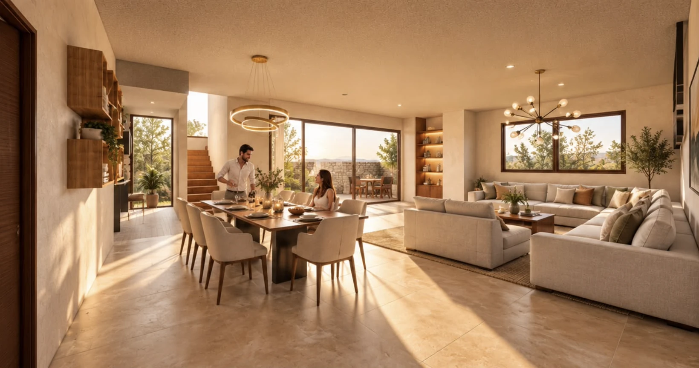
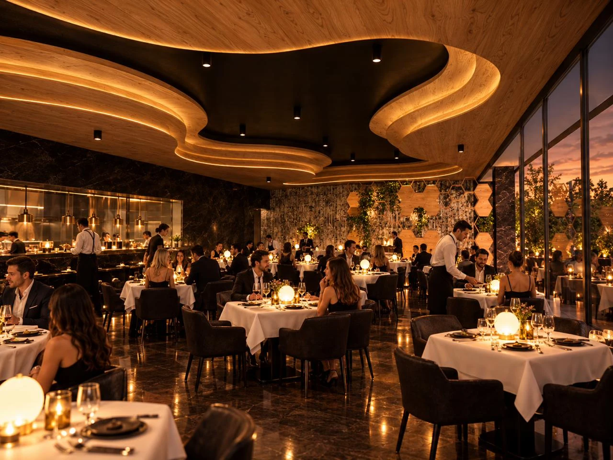
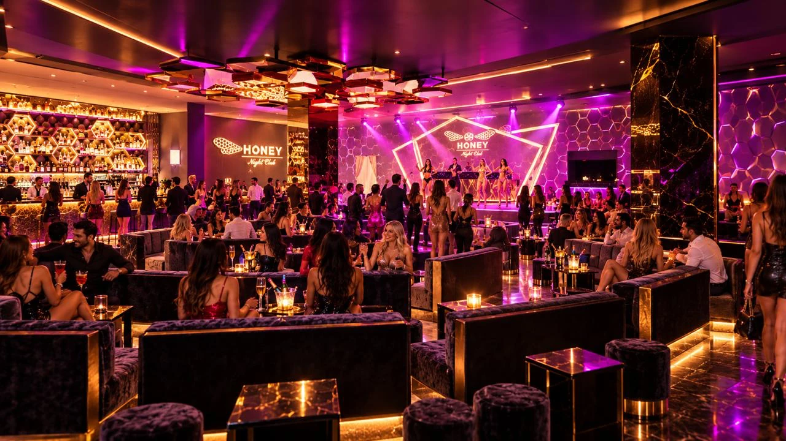

Construcción, remodelación y diseño de espacios comerciales, corporativos y residenciales en toda la República Mexicana.
Ver portafolioDieciocho años construyendo espacios para Chanel, Nutrisa y Waldo's.

Chanel Artz
Plaza Artz, San Ángel, CDMX

HONEY Centro Nocturno
Render, Polanco, CDMX
La Nonna Polanco
Emilio Castelar 135, Polanco, CDMX
Residencia Rancho San Diego
Render, Rancho San Diego, Ixtapan de la Sal, Edo. Méx.

Piacevole Santa Fe
Juan Salvador Agraz 130, Lomas de Santa Fe, CDMX

Restaurante en Polanco
Render, Polanco, CDMX

Cielito Querido Café
Av. Popocatépetl (Eje 8 Sur) 488, Benito Juárez, CDMX

Residencia Rancho San Diego
Render, Rancho San Diego, Ixtapan de la Sal, Edo. Méx.

Sonora Asador Añejo
Hacienda de Valle Escondido, Atizapán de Zaragoza, Edo. Méx.

Restaurante en Polanco
Render, Polanco, CDMX

Bar BF Santa Fe
Juan Salvador Agraz 130, Lomas de Santa Fe, CDMX

HONEY Centro Nocturno
Render, Polanco, CDMX
Junto a despachos como
- Sordo Madaleno Arquitectos
- Kababie Arquitectos
- Esrawe Studio
- Niz + Chauvet
- Construtech
- Desarrollos Confianza
Hablemos de tu proyecto.
Cuéntanos qué estás construyendo o remodelando y te contactaremos para agendar una visita o llamada.
Solicitar cotizaciónVer portafolio